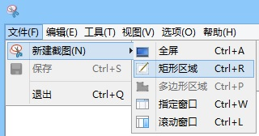
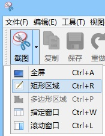
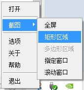
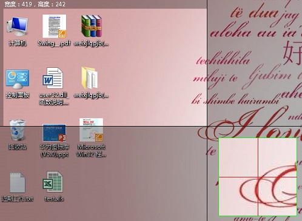

矩形区域截图
一、使用矩形区域截图
1. 点击菜单栏“文件-新建截图-矩形区域”进行矩形区域截图

2. 点击工具栏“截图-矩形区域”进行矩形区域截图

3. 右击系统托盘图标，选择“截图-矩形区域”进行矩形区域截图

4. 使用快捷键Ctrl+R进行矩形区域截图
二、截图过程中的操作
1. 进入截图状态后，背景为半透明状态，鼠标位置展示十字参考线，
鼠标所在像素放大展现在缩略图中

2. 按下鼠标左键并拖拽，选择需要截图的区域
3. 截图图像上方展示图像的长宽
4. 截图时松开鼠标左键，完成截图
5. 双击鼠标左键可将截图展示到主窗口
6. 截图完成后按下右键，可重新截图
7. 截图完成后按下ESC键，可取消本次截图
8. 截图完成后，鼠标移入截图区域，可拖动鼠标，重新选取截图范围